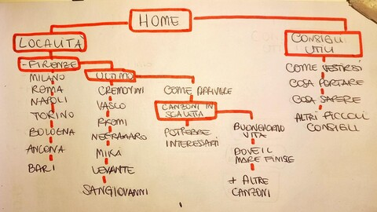
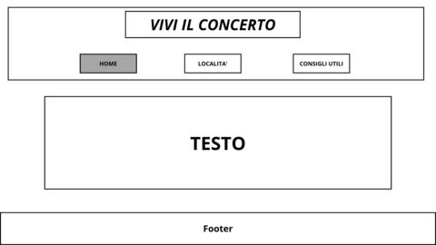
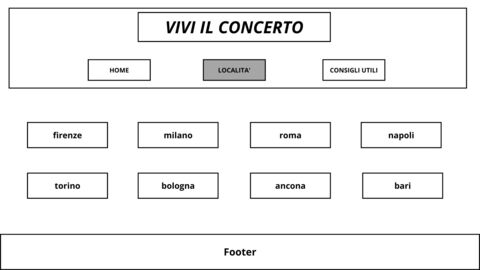
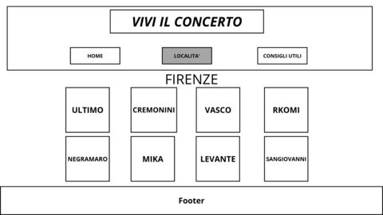
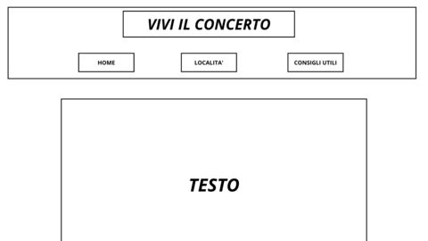
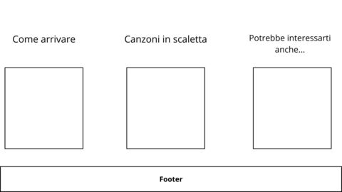
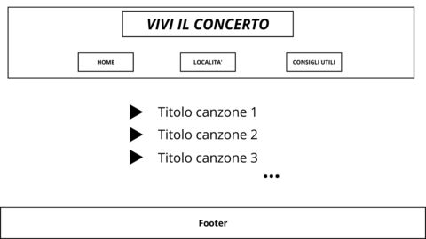
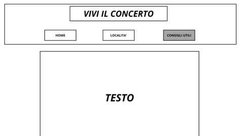
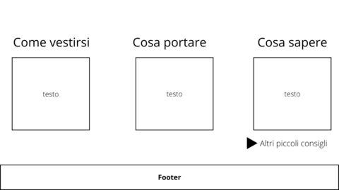

ABSTRACT
L’intento del progetto “Vivi il Concerto" è quello di raggiungere e soddisfare tutti coloro che cercano in internet informazioni più specifiche riguardo ad un evento, in particolare un concerto, e di farlo soprattutto attraverso l’interattività e la dinamicità che il sito ha da offrire.
PROJECT MANAGEMENT PLAN
BENCHMARKING
Obiettivi
Spesso l’esperienza del concerto viene data per scontata e la sua organizzazione un po’ sottovalutata. Vivi il Concerto aiuta l’utente a focalizzarsi meglio su come prepararsi all’evento, tramite l’apposita sezione dedicata ai consigli utili, come raggiungerlo e cosa aspettarsi. Inoltre, un altro degli obiettivi principali è quello di fornire in un’unica pagina tutti i testi dei brani presenti in scaletta, risparmiando all’utente l’impegno di fare continue ricerche online durante l’evento che possono distrarlo e far venire meno la sensazione di coinvolgimento.
Target utente
Il mio sito è quindi pensato soprattutto per chi è alle prime esperienze con la musica dal vivo, ma non esclude dalla navigazione chiunque voglia qualche informazione in più sugli eventi a cui intende partecipare.
Competitors
Non esistono dei competitors che si offrono a soddisfare ciò per cui Vivi il Concerto è stato creato nella sua interezza. Sicuramente si contano delle realtà affermate nel settore musicale come Team World e TicketOne che si prestano però maggiormente ad organizzare importanti ed acclamati eventi musicali (il primo) e offrire una panoramica sugli spettacoli in Italia con possibilità di acquistarne direttamente i biglietti (il secondo). Mentre Team World coinvolge maggiormente gli utenti più giovani, TicketOne viene visitato da chiunque abbia la necessità di partecipare ad un evento, indipendentemente dall’età. Inoltre, non esistono siti che si occupino, nello specifico, di dare consigli utili in vista di eventi musicali.
STRUTTURA E LAYOUT
Architettura del sito
Wireframe
       Look and feel
Per il mio progetto ho voluto puntare principalmente sul colore viola (rgb 85, 0, 85) e giallo (rgb 255, 236, 166) combinati ad alcune loro sfumature (rgb 175, 156, 176 / rgb 241, 218, 136 / rgb 90, 12, 90). In più occasioni ho invece utilizzato i filtri “blur” e “brightness”, applicati ad alcune immagini utilizzate come sfondo, con lo scopo di far risaltare il testo presente su di esse. La font principalmente utilizzata è stata "GFS Didot", accompagnata in alcune occasioni da un corsivo o grassetto. Per piccole porzioni di testo sono state aggiunte le font "Reenie Beanie" e "Joan". In due parti del progetto sono state utilizzate impostazioni tipiche del menù a scomparsa al fine di garantire la migliore leggibilità possibile, con lo scopo di non appesantire visivamente la pagina. Il design di Vivi Il Concerto vuole essere accattivante e dinamico, soprattutto quando l’utente lo visualizza sul PC. Sono state infatti aggiunte parti interattive come la lista da poter spuntare o il menù a tendina in due pagine del sito; giochi di scomparsa o ingrandimento del testo e cambi di colore al passaggio del mouse. Le immagini sono state prese da Google Immagini e da siti che offrivano foto non coperte da copyright come Pixabay e Pexels. Purtroppo, per questioni logistiche, non è stato possibile lavorare su più di un cantante o località presenti nel mio sito. Ho infatti scelto di focalizzarmi e sviluppare al meglio le pagine inerenti ad un solo artista (Ultimo) e una sola città (Firenze).
Linguaggi e strumenti
Per il mio sito ho utilizzato linguaggio HTML e CSS. Mi sono però avvalsa dell’aiuto che siti come W3Schools offrono insieme ad altri forum online per far prendere forma alle mie idee. Il Wireframe è stato realizzato con Canva, mentre per le font mi sono rivolta a Google Fonts. Sempre tramite strumenti di Google -Analytics- ho potuto registrare le statistiche tecniche del sito. FontAwesome mi è stato utile per aggiungere l’icona di Instagram all’interno del footer e Github mi ha permesso di pubblicare il sito online.
COMMUNICATION STRATEGY
Background
Come detto in precedenza, Vivi Il Concerto non conta dei veri e propri competitors, in quanto nessun altro sito esistente è creato con lo scopo di dare consigli e fornire strumenti utili a migliorare la partecipazione ad un evento. Il sito nasce quindi dalla mia personale esperienza: dopo aver preso parte a numerosi concerti negli anni e aver sperimentato su me stessa quali sono le caratteristiche tipiche di giornate e serate del genere, ho deciso di dare vita ad un progetto che aiutasse soprattutto gli inesperti con l’organizzazione personale precedente all’evento. Oltre alla sezione dei “consigli utili”, che intende aiutare soprattutto chi è alle prime armi, il punto forte del progetto è sicuramente la sezione “scaletta”, grazie alla quale l’utente riesce ad avere sottomano e in un’unica pagina i testi, già in ordine, delle canzoni del concerto. Si riesce così a risparmiare il tempo che verrebbe perso durante l’evento nel riconoscere la canzone, ricordare il titolo e cercarlo su internet. Sembra scontato che chi vada ad un concerto sappia tutte le canzoni dell’artista, ma spesso non è così e questa sezione del mio sito credo che dia una marcia in più al progetto anche quando comparato a pagine web molto affermate nel settore (vedi il sopracitato TeamWorld che fornisce le scalette dei concerti con i soli titoli delle canzoni).
Obiettivi comunicativi
Il progetto si prefigge quindi di essere uno strumento intuitivo e completo per l’organizzazione personale precedente al concerto e si auspica di riuscire a far sentire l’utente il più coinvolto e soddisfatto possibile durante l’esperienza stessa dell’evento, accompagnata da Vivi Il Concerto.
Target audience e messaggio
Anche se il sito non si rivolge ad un target preciso e assoluto di pubblico, è probabile che gli utenti maggiormente coinvolti siano i più giovani (under 40). Non è però da escludere che anche persone più adulte siano interessate al progetto, in quanto appassionate di musica e frequentatrici di eventi. I gruppi di interesse ai quali Vivi Il Concerto è indirizzato vengono solitamente raggiunti attraverso i social media, in particolare Instagram, con post e storie pubblicati nell’account ufficiale del sito o attraverso ipotetiche collaborazioni e accordi con pagine ufficiali/fan page del singolo cantante. Un ostacolo alla diffusione del sito potrebbe essere dato dal fatto che negli ultimi anni la fruizione di contenuti avviene sempre di più tramite app e molto meno su siti web. Predisporre un’applicazione per smartphone renderebbe molto più immediato l’uso degli strumenti offerti dalla realizzazione di questo progetto. Inoltre, il fatto che il sito venga sponsorizzato e sia facilmente raggiungibile tramite social media rende più ostica la partecipazione di over 40 Con questo sito desidererei aiutare chiunque abbia dei dubbi o sia alle prime armi in materia di concerti e abbia bisogno di una guida per l’evento, insieme a chiunque riscontri il bisogno di dare anche solo una veloce ripassata ai testi delle canzoni.
Promozione e Valutazione dei risultati
Gli strumenti di cui mi sono avvalsa per la promozione del mio sito sono stati Instagram (avendo creato una pagina ufficiale apposita) e Google Analytics (per analizzare le statistiche relative alle visualizzazioni e all’interazione degli utenti sul sito). Gli obiettivi che mi ero preposta erano: almeno 20 likes al post pubblicato su instagram; almeno 50 visualizzazioni al sito. Entrambi sono stati raggiunti con successo